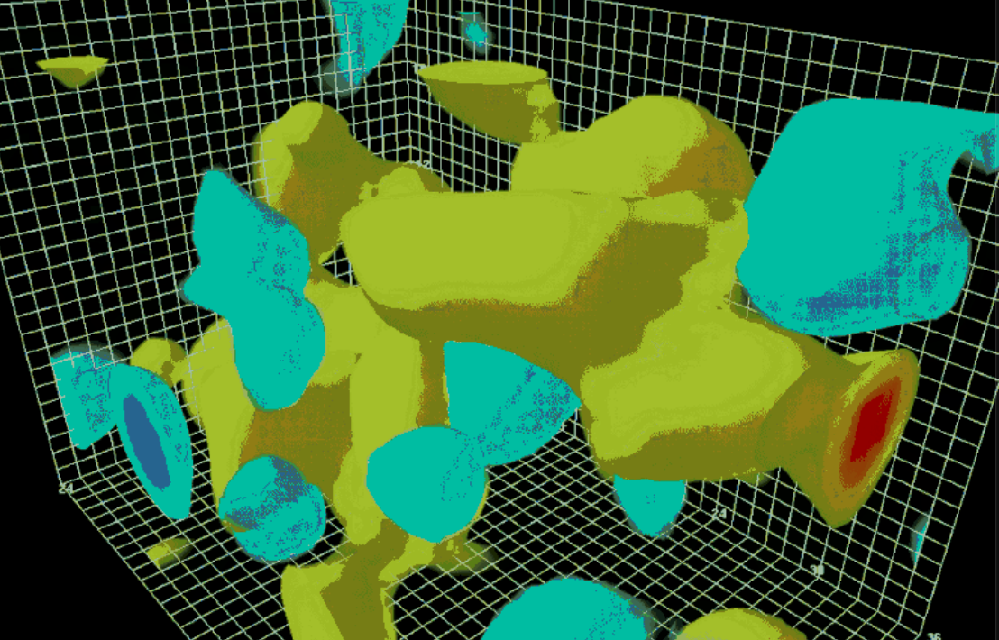
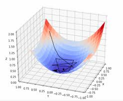

Teaching Resources
Overview of my teaching resources, course materials, and lecture notes from previous classes.

PHY456: Quantum Mechanics II Course Notes
Course notets from PHY456: Quantum Mechanics II
- L1: Scattering
- L2: Quantum Scattering
- L3: Spherically Symmetric Potentials
- L4: Classical Rotations
- L4.5: Spin-1/2 Rotations
- L5: Stern Gerlach Analysis
- L6: Addition of Angular Momenta I
- L7: Addition of Angular Momenta II
- L8: Time Independent Non-Degenerate Perturbation Theory
- L9: Time Independent Degenerate Perturbation Theory
- L10: Time Dependent Perturbation Theory

PHY489: Particle Physics Course Notes
Course notes from PHY489: Particle Physics
- L1: Introduction to the Standard Model
- L2: Review of Relativity
- L3: Spin and Angular Momentum
- L4: Internal Symmetries
- L5: Decays And Scattering
- L6: Transition Probabilities, Golden Rules
- L7: Feynman Rules for a Toy Theory
- L8: Spin-1/2 Formalism (Dirac)
- L9: QED.pdf- Spin-1/2 Formalism (Dirac)
- L10: Electrodynamics of Quarks and Hadrons
- L11: Introduction to QCD
- L12: Weak Interactions
- L13: Neutrino Oscillations and the Higgs Mechanism

Quantum Field Theory
Notes from Tobias Osborne's "Quantum Field Theory"

MAT235 Teaching Resources
My collection of teaching resources, problems and solutions for UofT's MAT235 Multivariable Calculus (2023-2024).
MAT235 Teaching Resources
My collection of teaching resources, problems and solutions for UofT's MAT235 Multivariable Calculus (2024-2025).
- Tutorial 1
- Tutorial 2
- Tutorial 3
- Tutorial 4
- Tutorial 4 Additional Solutions
- Tutorial 5
- Tutorial 6
- Tutorial 7
- Tutorial 7 Additional Solutions
- Tutorial 8
- Tutorial 9
- Tutorial 10
- Tutorial 10 Additional Solutions
- Tutorial 11
- Tutorial 12
- Tutorial 13
- Tutorial 14
- Advanced Vector Calculus Problems
- Advanced Vector Calculus Problems - Solutions